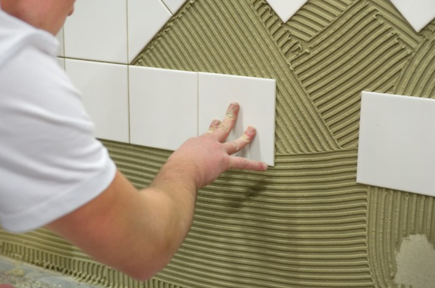
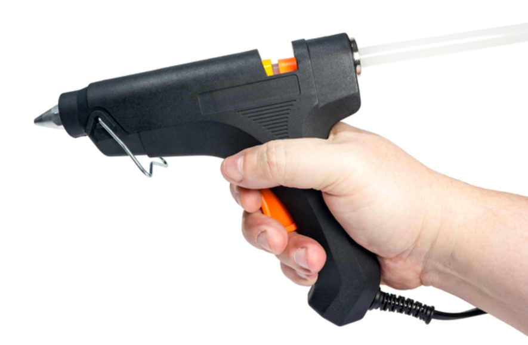
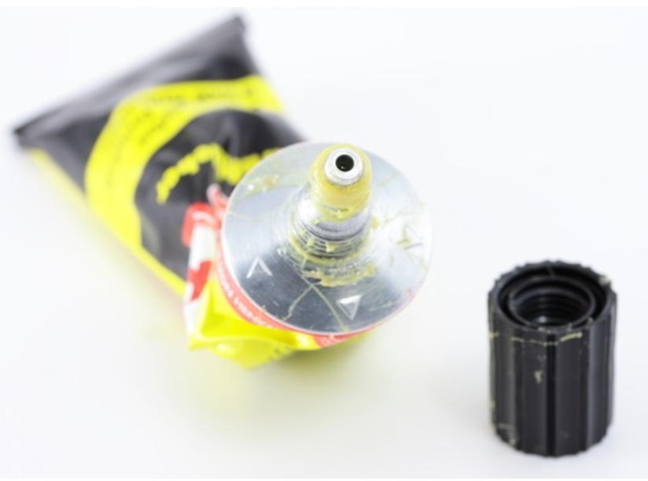
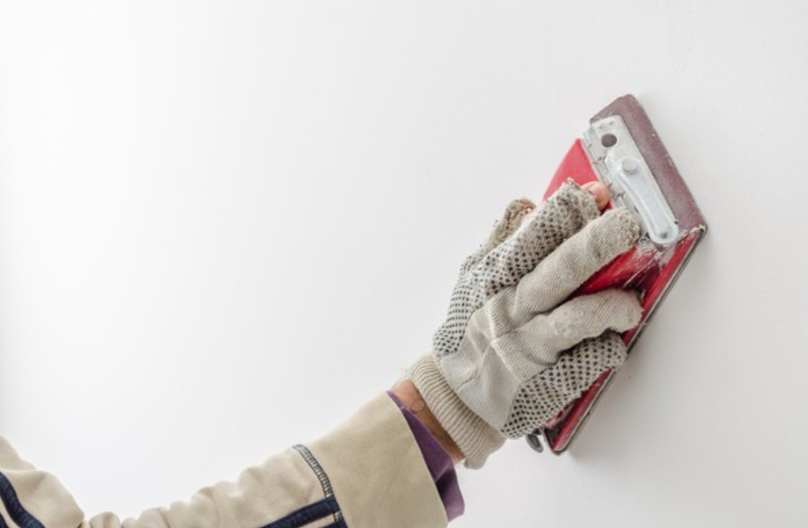
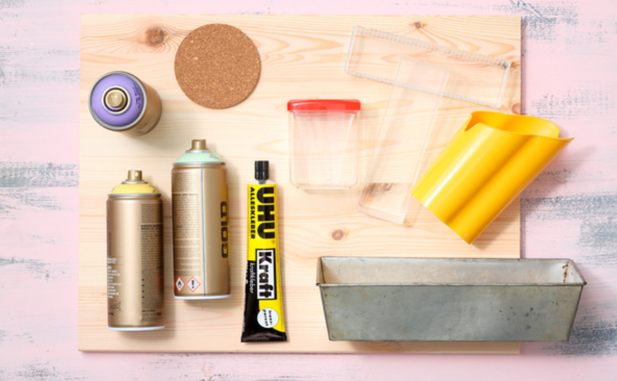

🏠 순간접착제 지우는법 억지로 떼면 위험해요!
용인 하수구막힘 전문 시공 후기

📋 작업 개요
- 위치: 용인
- 서비스 유형: 하수구막힘
- 작업 일시: 2023. 6. 26. 23:39
- 업체명: 하수구수사대 (010-5615-2118)
🔍 문제 상황
안녕하세요. 하수구수사대입니다.
이번 시간은 순간접착제 지우는법 관련된 내용 살펴보도록 하겠습니다. 순간접착제의 장점은 대부분의 물건은 쉽게 붙일 수 있다는 것입니다. 그러나 원하지 않는 붙임 현상이 발생했을 때에는 굉장히 당혹스러울 것입니다. 순간접착제로 인해 붙게 된다면 다시 떼어내는 것이 쉽지 않습니다.
접착되는 속도도 빠르고 바로 닦아낸다 할지라도 쉽게 닦아지지 않습니다. 만약에 불가피하게 휴지로 닦아내게 된다면 휴지도 같이 붙어버리는 일이 생길 수 있습니다. 그렇다고 해서 그냥 방치할 수도 없는 노릇일 것입니다.
순간접착제가 묻었다면

🔎 원인 분석
💡 전문가 진단: 순간접착제가 묻었다면
휴지가 아니라 다른 것을 이용해 닦아내 주어야 할 것입니다. 물티슈 또는 사용하지 않는 거즈 등 찢기지 않는 것을 사용해 주어야 할 것입니다. 순간접착제가 묻었다면 침착하게 지우는 방법을 아는 것이 중요합니다.
순간접착제를 닦아내다가 오히려 접착제가 퍼지면서 더 넓은 면적에 묻게 되는 일이 생길 수도 있습니다. 그러므로 접착제 자체가 퍼지지 않도록 주의해서 닦아 주어야 할 것입니다. 만약 접착제가 흘러내리지 않는 상황이라면 그대로 놔두는 것이 더 나을 수도 있을 것입니다.
접착제를 닦아낸 후 일차적인 대처를 하였거나 흘린 상태를 그대로 굳히게 놔두었다면 이후 해당 접착제를 제거하는 일을 해주셔야 합니다. 만약 순간접착제가 피부에 묻게 된다면 우선 해당 부위를 깨끗하게 씻어주어야 합니다. 해당 부위를 씻은 다음 순간접착제를 제거해야 합니다.
억지로 떼어낼 경우에는
상처가 생길 수도 있으므로 이 부분 조심하시는 게 좋을 것 같습니다. 만약 잘 떨어지지 않는다면 따뜻한 물에 5분가량 담근 후 다시 시도하시는 게 좋을 것 같습니다. 긁어 제거하지 말고 천천히 밀어내면서 제거해야 피부에 상처가 생기지 않을 것입니다.

🔧 작업 과정
순간접착제가 얇게 묻거나 넓은 부위에 묻은 것보다는 두껍게 적은 부위에 묻어 있는 것이 제거하는 게 수월한 편입니다. 그러므로 순간접착제를 무조건 닦아낸 후 제거하는 것보다는 상황에 맞게 제거하는 것이 필요합니다.
순간접착제를 굳히고자 한다면 찬물을 사용해야 하며 순간접착제를 불릴 경우에는 따뜻한 물을 사용해 주어야 할 것입니다. 순간접착제가 피부에 묻었을 경우 지우는 것도 중요하지만 예방하는 것이 더 나을 것입니다.
접착제를 사용할 때에는
반드시 목장갑을 끼시는 게 좋을 것 같습니다. 순간접착제의 경우에는 묽은 편이기에 잘 흐르는 편입니다. 그러므로 목장갑을 끼고 사용해야 손에 묻는 것을 예방하실 수 있습니다.
평소 잘 입지 않는 긴팔 및 긴 바지를 입고 나서 사용하는 것도 좋은 방법일 것입니다. 만약 물로 이러한 순간접착제가 없어지지 않는다면 해당 부위에 유분기를 더해 순간접착제 지우는법도 생각해 볼 수 있을 것입니다.
접착제가 묻은 부위에 로션 등을 묻히고 나서 유분을 더해주고 나서 순간접착제를 살살 긁어내는 것입니다. 만약 로션이 없을 경우에는 식용유 또는 올리브오일 등의 기름을 사용하실 수도 있습니다.
기름을 바르고 나서 10분 정도 놔두고 순간접착제을 밀어내 보시길 바랍니다. 묻은 순간접착제가 조금씩 없어지는 것을 보실 수 있습니다. 앞서도 말씀드렸지만, 만약 사용하게 된다면 피부를 보호할 수 있는 것을 착용하시고 진행하시는 게 좋을 것 같습니다.

✅ 작업 완료
지금까지 하수구수사대에서
순간접착제 지우는법 관련 내용 알려드렸습니다.




⚠️ 하수구 배관 막힘 예방 및 관리 가이드
- ✅ 머리카락, 비닐, 물티슈 등 물에 분해되지 않는 이물질은 하수구 유입을 절대 금지해 주세요.
- ✅ 하수구 거름망을 씌우고 모여진 이물질은 주기적으로 쓰레기통에 바로 비워주셔야 합니다.
- ✅ 배관 노후가 심할 경우 이물질이 더 쉽게 걸리므로 주기적인 배관 세척(고압세척 등)을 권장합니다.
- ✅ 작업 후 1년 이내 재발 시 하수구수사대에서 무상 A/S 보증 서비스를 제공합니다.
💡 핵심 정리
- 확실한 장비 작업(내시경 점검 및 샤프트 스케일링)으로 원인을 뿌리 뽑습니다.
- 작업 후 1년 이내에 동일한 부위 재발 시 100% 무상 A/S 서비스를 보장합니다.
- 서울 · 경기 · 인천 전 지역에 24시간 언제든 긴급 출동할 수 있도록 항시 대기 중입니다.
❓ 자주 묻는 질문 (FAQ)
🚨 용인 하수구막힘 문제로 고민이신가요?
정확한 원인 진단과 확실한 시공으로 재발 없는 해결을 약속드립니다.
24시간 긴급 출동 | 서울 · 경기 · 인천 전지역 | 1년 내 재발 시 무상 A/S